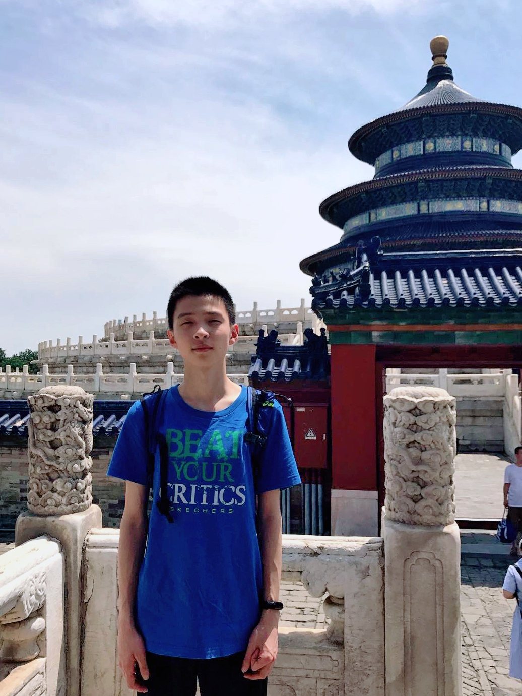

About
Hi! My name is Rongxin Tian, and you can call me Simon. I come from Yangzhou, a small city in China. Now I am a sophomore majoring in computer science in Rose-Hulman Institute of Technology.
I have lots of hobbies, such as painting, swimming, listening to music, watching movies, playing games and so on. I have been learning painting since I was five years old, and now I will draw something whenever I have time. At the same time, I have been swimming for 10 years. I will go swimming no matter in spring, summer, autumn or winter. I regard swimming as a good fitness program and I really like the feeling of being free in the water. Also, I am obsessed with listening to music and playing video games. Pure music and folk songs are my favorite music types and I like fps (first-person shooting) and card video games as well.
This website is the project I created when taking the CSSE280 course in our school. It is used to introduce myself, the projects I have done, and my resume. Now I treat it as my own personal website, if there are things I want to add in the future, such as new looks or fun things, etc. I will keep updating and sharing.